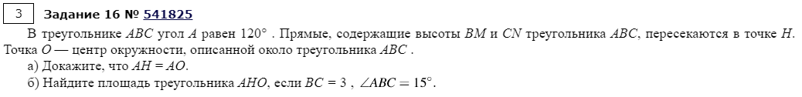
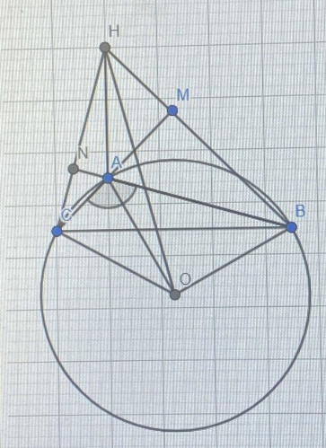

Выполнил Маслов Артемий
Решение задания №541825
Условие

Чертеж

Решение пункта а
Рассмотрим треугольник OBC. Если применить к нему теорему синусов, то получим:
\(ВC=2*OB*OC*sin(120°)=2AO*sin(120°)=AO*\sqrt{3}\)(*).
∠ANH + ∠HMA = 180°, значит ∠NHM+∠MAN = 180°
Тогда NMAH вписан в окружность.
Рассмротрим треугольник MNA:
MN = 2R*sin(120°) = AH*sin(120°) = AH*\(\frac{\sqrt{3}}{2}\),
где R - радиус окружности, в которую вписан HMAN.
\(\frac{MA}{AB}\) = \(\frac{AN}{AC}\) и ∠MAN = ∠CAB,
значит треугольники MNA и ABC подобны.
cos(60°) = 0.5, тогда коэффициент подобия равен 2, значит MN = 0.5BC. Подставим это в (*)
AH*\(\frac{\sqrt{3}}{2}\) = \(0.5*AO*\sqrt{3}\).
Значит AH = AO. Д-но.
Решение пункта б
Запишем теорему ло вписанном угле для угла COA:
∠COA = 2∠ABC=2*15°=30°.
Треугольник COA равнобедренный, тогда:
∠CAO=\(\frac{180° - 30°}{2}\) = 75°
∠ACB = 45° = ∠CAE.
Тогда угла HAO - 150 градусов.
Из доказанного в преыдущем пункте можем записать:
\(\frac{BC}{\sqrt{3}}\) = \(\frac{3}{\sqrt{3}}\)
Найдем площадь треугольника через 2 стороны и угол между ними:
S(AHO) = 0.5*3*sin(150°) = \(\frac{3}{4}\).
Ответ: площадь треугольника AHO равна \(\frac{3}{4}\).